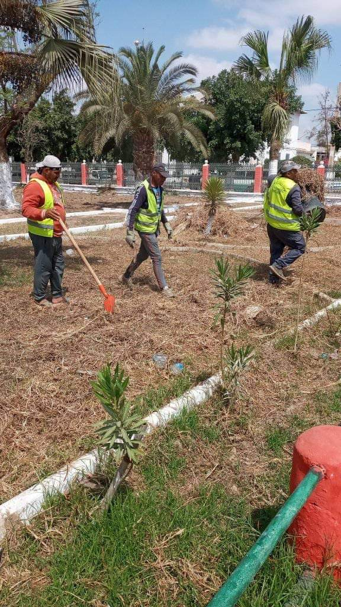
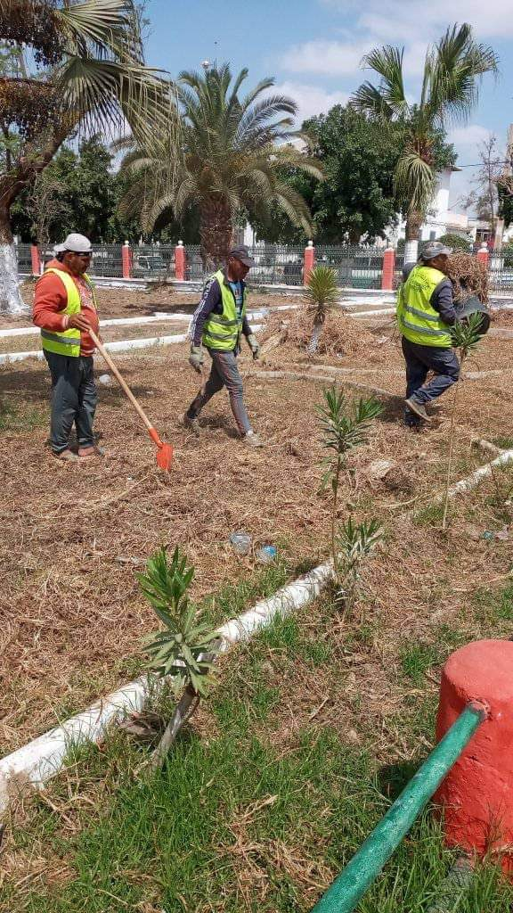
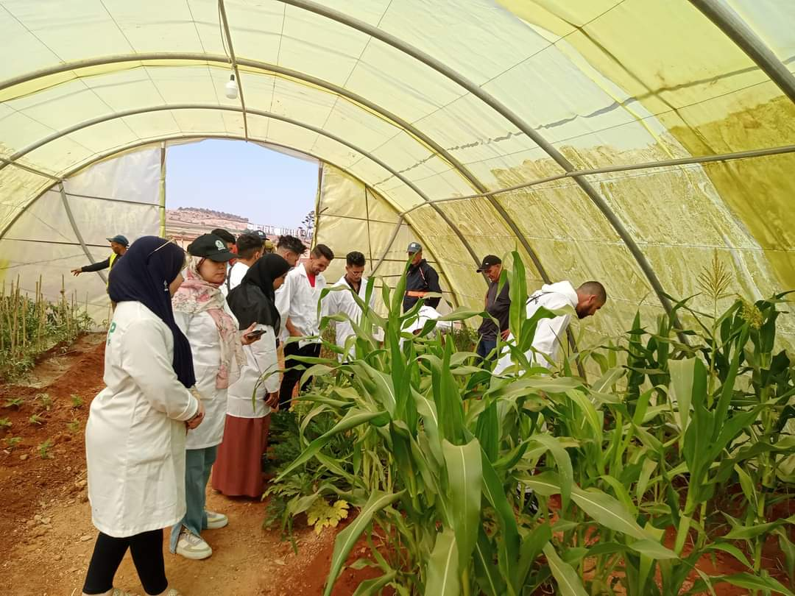
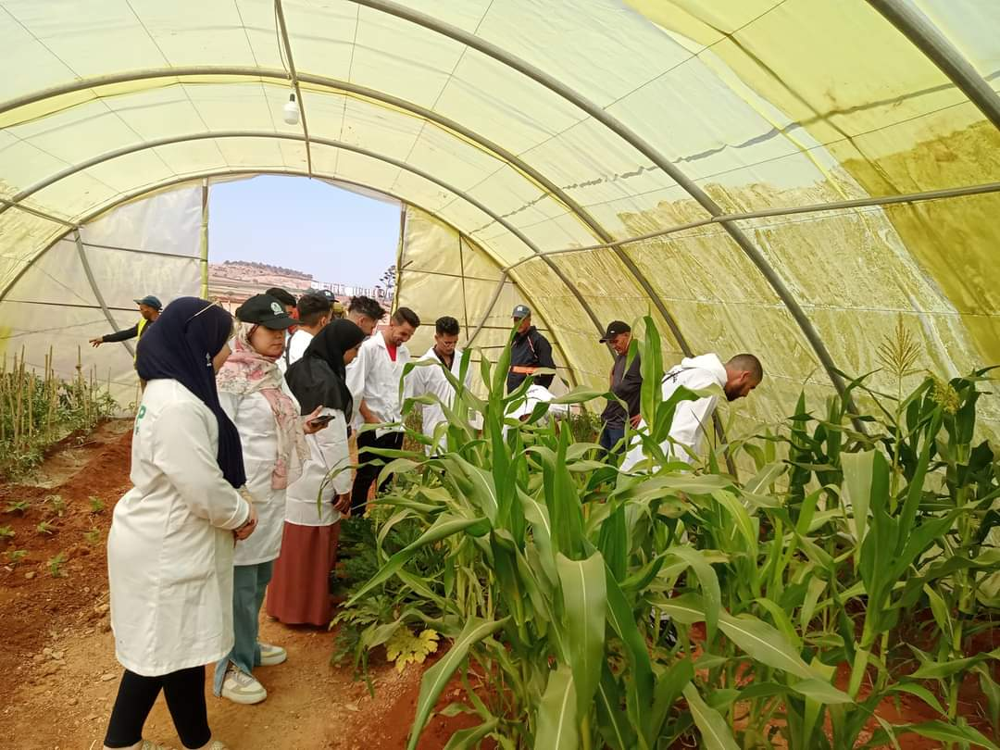
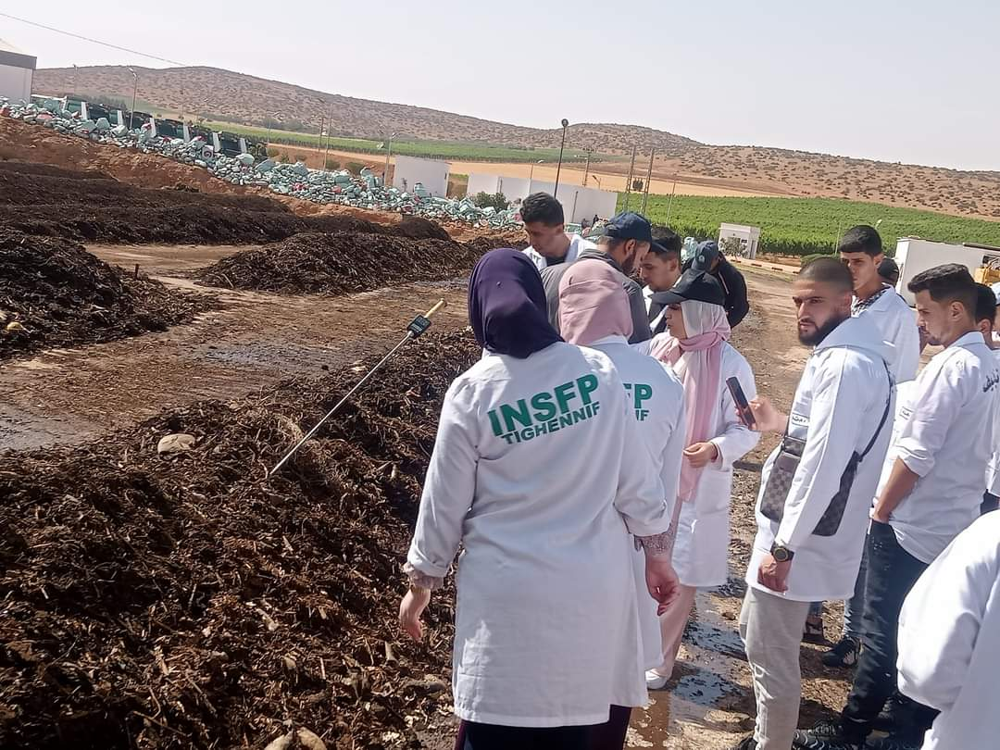
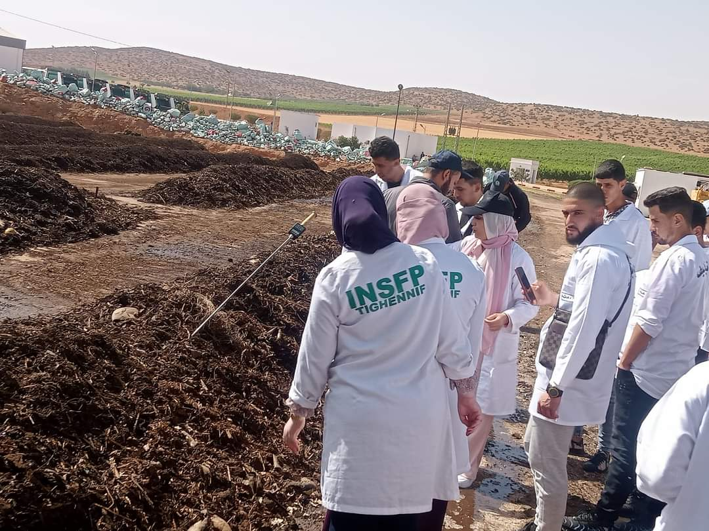

مركز الردم التقني

تعريف مركز الردم التقني
مركز الردم التقني بولاية معسكر هو مؤسسة متخصصة في إدارة ومعالجة النفايات الصلبة. يهدف المركز إلى تقليل الأثر البيئي للنفايات من خلال تطبيق تقنيات حديثة ومستدامة في جمع ومعالجة النفايات، وتشجيع إعادة التدوير.
كيفية عمل المركز
يعمل المركز من خلال جمع النفايات من المصادر المختلفة، وتصنيفها، ومعالجتها باستخدام تقنيات متقدمة. كما يقوم المركز بتوعية المجتمع بأهمية إدارة النفايات بشكل مستدام.
الأنشطة الرئيسية
- جمع النفايات: توفير خدمات جمع النفايات اليومية للأحياء السكنية والتجارية
- فرز النفايات: فرز النفايات إلى فئات مختلفة مثل البلاستيك، الورق، الزجاج، والنفايات العضوية
- معالجة النفايات: تحويل النفايات العضوية إلى سماد عضوي والنفايات الأخرى إلى مواد قابلة لإعادة التدوير
- حملات التوعية: تنظيم حملات توعية للمجتمع حول أهمية النظافة وإعادة التدوير
حملات جمع النفايات
تنظيم حملات منتظمة لجمع النفايات من المنازل والأماكن العامة، بهدف الحفاظ على نظافة المدينة وتقليل التلوث
مشاريع إعادة التدوير
تنفيذ مشاريع لإعادة تدوير النفايات البلاستيكية، والورقية، والزجاجية، وتحويلها إلى مواد قابلة للاستخدام مجدداً.
ورش عمل توعوية
تنظيم ورش عمل تهدف إلى توعية المجتمع بأهمية إدارة النفايات وإعادة التدوير، وتعليم الأساليب الصحيحة للفرز المنزلي للنفايات
وظائف جمع النفايات
تشمل هذه الوظائف العاملين في مجال جمع النفايات من المنازل، والشركات، والمناطق الصناعية، ونقلها إلى مركز الردم التقني.
وظائف تصنيف ومعالجة النفايات
تشمل هذه الوظائف العاملين في مجال تصنيف النفايات ومعالجتها باستخدام تقنيات متقدمة، لضمان التخلص الآمن والفعال من النفايات.
وظائف التوعية والتعليم
تشمل هذه الوظائف العاملين في مجال تنظيم ورش العمل والفعاليات التوعوية، بهدف زيادة الوعي البيئي وتشجيع المجتمع على المشاركة في برامج إعادة التدوير
معرض الصور


 



 



 
